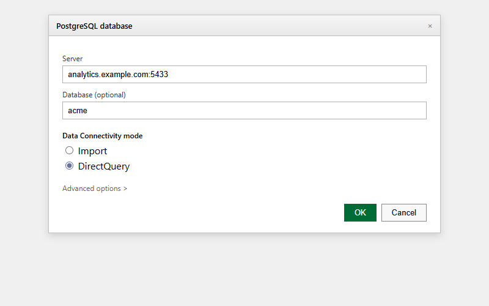

Build a Power BI Report
What this covers
A complete walk from an empty Power BI Desktop file to a finished, refreshable report page on the Tessallite demo model: a sales-by-product bar chart, a trend line, a country slicer, and a pair of KPI cards — connected live, so every refresh re-asks Tessallite and benefits from acceleration automatically.
Before you start
- Power BI Desktop installed.
- Your Tessallite sign-in, the workspace slug, and the gateway address. On the local demo these are
admin@acme-demo.com/acme-demo, slugacme-demo, gatewaylocalhost. - The full connection reference — including how to scope the connection to one model — is at Power BI Connection Guide. This page picks up the moment after connecting.
The one setting that matters: DirectQuery
When the connection dialog appears, you face the only decision with long-term consequences: Data Connectivity mode.

- DirectQuery — every visual asks Tessallite a live question when it renders or refreshes. Tessallite answers from a pre-computed summary when one covers the question, so the report stays both current and fast.
- Import — Power BI copies a snapshot of the data into the file. It works, but the report is a photograph: it cannot be accelerated by new summaries, and it goes stale until someone refreshes the extract.
Choose DirectQuery. That is the whole decision.
Why not Import, ever? Two honest reasons. First, freshness: with DirectQuery the number on screen is the number in the source right now. Second, governance: an imported extract is a copy of the data sitting in a file, outside the reach of the security rules that govern every live query. Live keeps the data where the rules are.
Step 1 — Connect and load the model
- Open Power BI Desktop, click Get Data, choose Database > PostgreSQL database, and click Connect.
- Server:
localhost:5433(or your host, always with the port). - Database:
acme-demo— oracme-demo/modelxto open directly on the one model this walkthrough uses. - Data Connectivity mode: DirectQuery.
- When asked for credentials, choose Database authentication and enter your Tessallite email and password.
- In the Navigator, tick
modelxand click Load.
The Fields pane on the right now lists the model: dimensions like product_name, country_code, and business_date; measures like net_sales and gross_margin. In DirectQuery mode there is no data in the file — the Fields pane is a window into the model, and every visual you build asks a live question.
Step 2 — The bar chart: sales by product
- Click the stacked bar chart icon in the Visualizations pane. An empty frame appears.
- Drag
product_nameonto the Y-axis field well. - Drag
net_salesonto the X-axis well.
The chart fills in — one bar per product, longest first if you sort descending (click the ... menu on the visual, Sort axis > net sales). Each drag sent a grouped query through the gateway; if the model has a summary covering sales by product, the answer came back from it in a blink.
Tip: the filter pane is server-side too. Drag
channel_codeinto the Filters on this visual well and tickonline. Power BI adds the filter to the query it sends Tessallite — the narrowing happens in the database, not in the file — so the visual stays fast and the totals stay honest.
Step 3 — The trend line
- Click empty canvas, then the line chart icon.
- Drag
business_dateonto X-axis andnet_salesonto Y-axis. - Power BI groups dates into a year-quarter-month-day hierarchy automatically; use the little expand arrows on the axis to drill down to months.
You now have the two shapes every sales report wants: who (products) and when (the trend). Both are live views of the same governed model.
Step 4 — The slicer
- Click empty canvas, choose the slicer icon, and drop
country_codeinto its field well. - Click a country in the slicer. Both visuals re-query and redraw for that country alone.
This is the interactive payoff of DirectQuery: a slicer click is a fresh question to Tessallite, answered live — and because the slicer applies to the whole page, your two visuals can never drift into showing different countries.
Step 5 — KPI cards
- Click empty canvas, choose the card visual, and drop
net_salesin. A big, boardroom-ready number. - Repeat with
gross_margin, or with a model measure likeRevenueif your report prefers the governed headline.
Keep the cards at the top of the page, chart and trend below, slicer at the left — the same layout instinct as the Excel dashboard, and for the same reason: the eye lands on the headline first.
Step 6 — Save, refresh, and share sensibly
Save the .pbix. From now on:
- Refresh (or simply opening the file) re-issues every visual's query against current data. There is nothing to re-point and nothing to paste.
- Other tools agree. A colleague reading net sales by product in Excel or in the Tessallite web app sees the same figure, because every surface computes it from the same model definition.
- One known gap: Power BI does not support XMLA drill-through natively over this connection, so right-click drill-through to detail rows is not available here. When you need the rows behind a number, that is a job for Excel (PivotTable or add-in drill-through) or the Tessallite web app's query panel.
Common trap: rebuilding the model inside Power BI. Power BI will happily let you add calculated columns and DAX measures on top of the model. Resist the urge for anything the business shares. A "net sales after adjustments" that lives only in your
.pbixis a number nobody else can see, trust, or reuse — and next quarter it will disagree with the official one in a meeting, in public. If the adjustment is real, ask the modeller to add it to the model once, governed, for everyone.
Troubleshooting
| Symptom | Likely cause | What to do |
|---|---|---|
| The Analysis Services connector fails | Power BI Desktop's AS connector does not work with Tessallite | Use the PostgreSQL connector instead — see the connection guide |
| Navigator shows nothing | No deployed models in the workspace | Ask your modeller to deploy one |
| Visuals feel slow on first load | The query went to the source path (no summary covers it yet) | It is still correct; the optimizer learns from misses and proposes summaries over time |
| Authentication errors after a password change | Stored credentials are stale | File > Options > Data source settings, clear the entry, and reconnect |
| A measure shows as a sum of text or an error | The field was dropped into the wrong well | Measures go in value wells; dimensions go on axes and slicers |